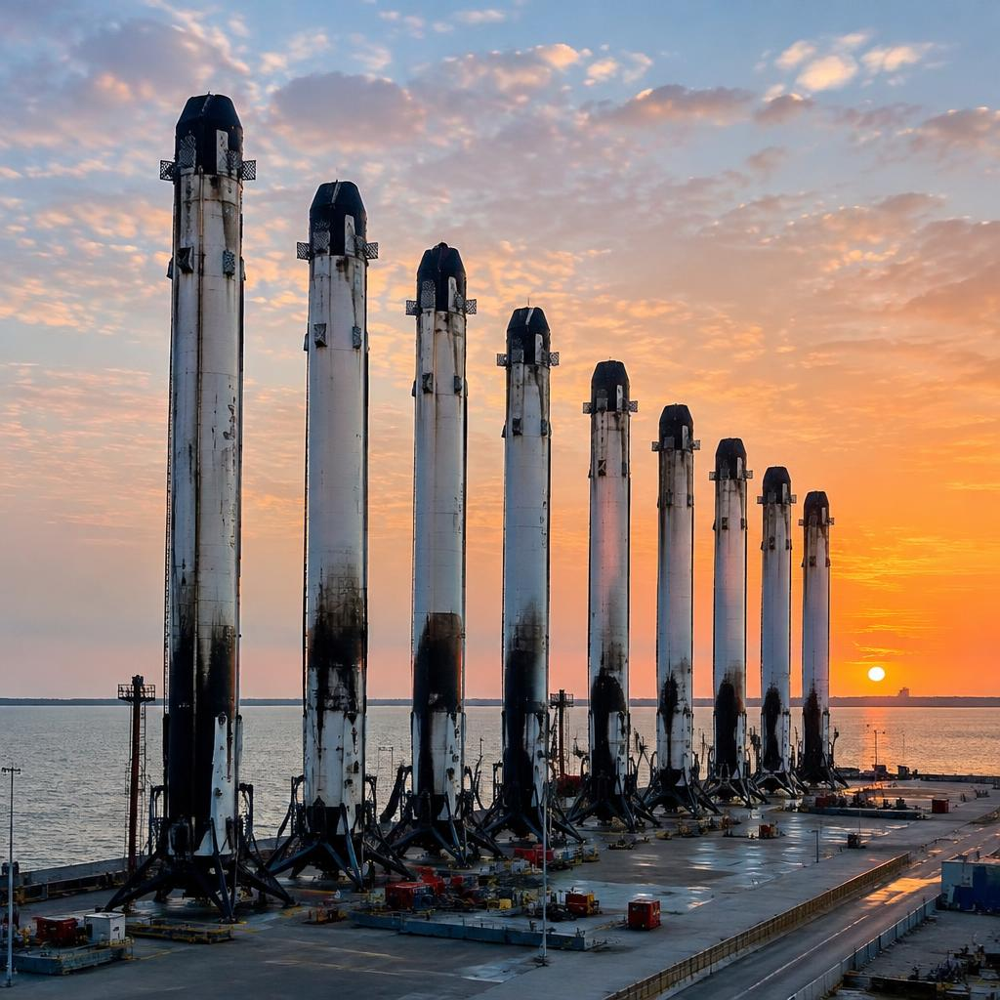
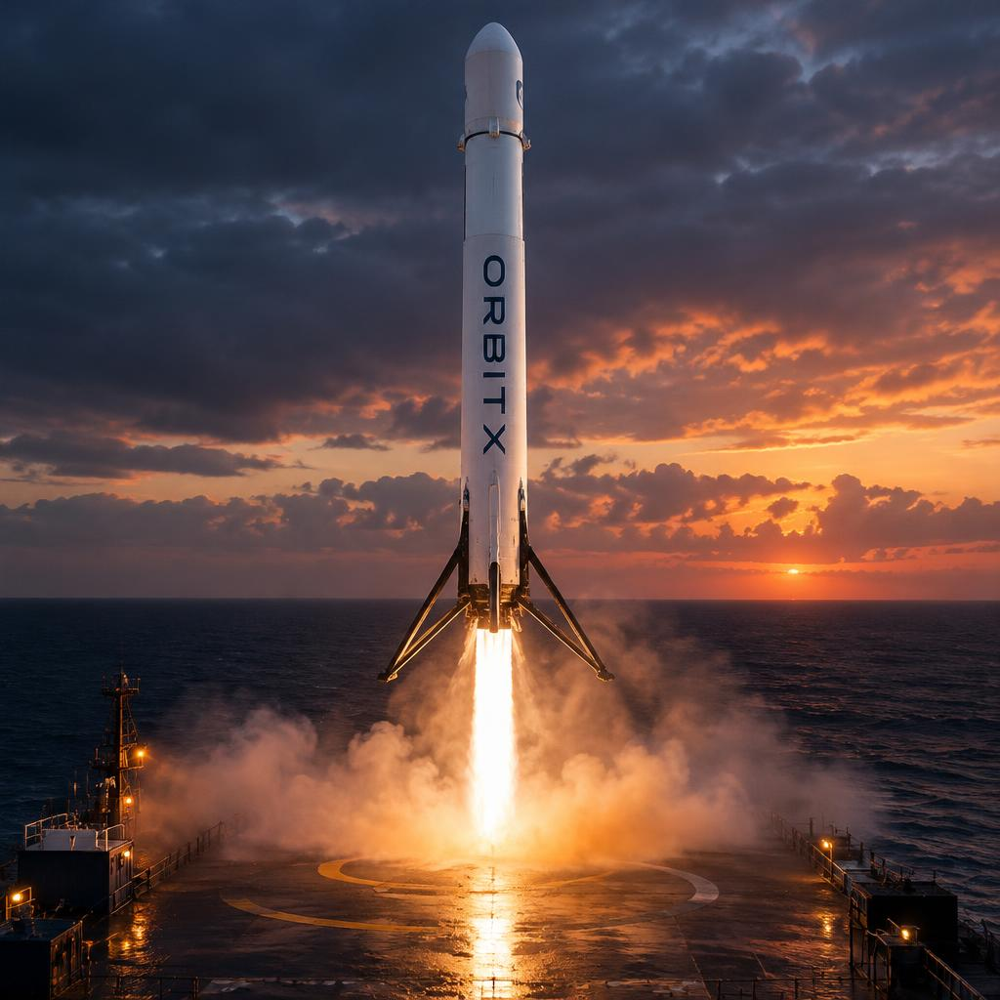
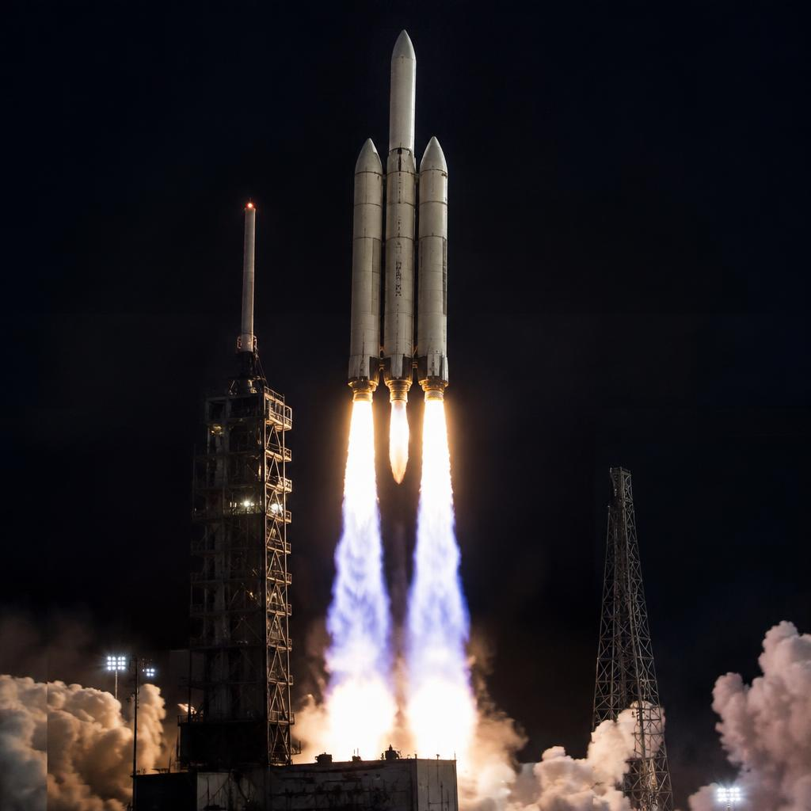
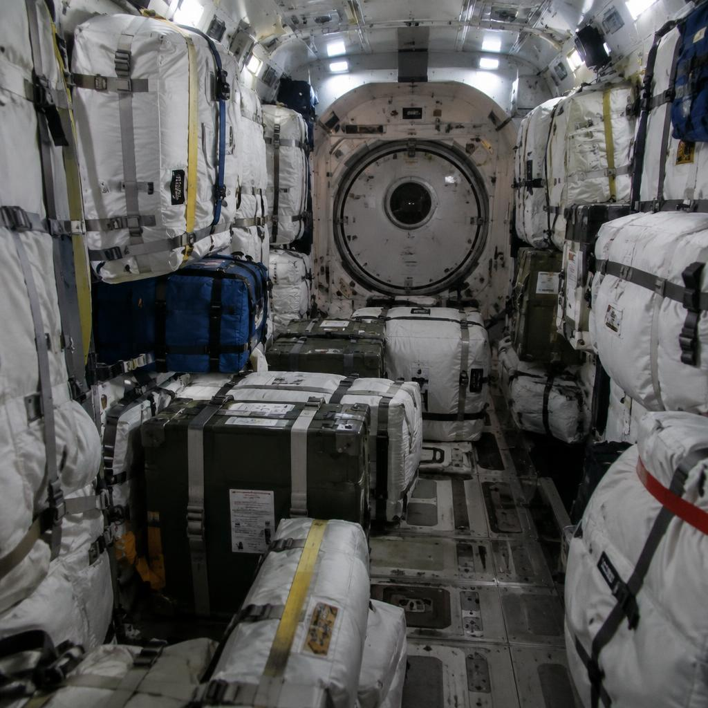

Vehicle · OrbitX Heavy
OrbitX Heavy
Three OrbitX One cores flying as one: 27 engines, 22,800 kilonewtons of thrust and the heaviest payloads in our operational fleet.

Three cores, one rocket
OrbitX Heavy is built by strapping two extra first stages to a standard OrbitX One — the same tanks, the same nine-engine engine bays, the same landing hardware. Sharing hardware with the workhorse rocket keeps it affordable: a triple-core heavy launcher assembled from stages we already know how to build, fly and land.
At liftoff the two side cores and the centre core all fire together — 27 VX-9 engines producing 22,800 kilonewtons of thrust, enough to lift the full stack's 1.4 million kilograms off the pad with margin to spare.

The flight profile, minute by minute
T+0: all 27 engines ignite in staggered pairs to soften the acoustic shock, hold-downs release, and the vehicle rises. Twelve seconds later it pitches downrange.
Around T+1:20 the rocket passes max-Q — the moment of maximum aerodynamic stress, when it is both fast enough and still low enough for the air to hit hardest. Throttle down, punch through, throttle back up.
At T+2:30 the two side boosters shut down and separate. Thirty seconds later the centre core throttles down its outer engines to conserve propellant, keeps burning, then separates too. From here a single second stage carries the payload the rest of the way.

Two boosters, side by side
Minutes after separation, the side boosters flip end-over-end, boost back toward the coast, deploy their grid fins and fly a controlled descent through reentry. Both touch down on their landing pads seconds apart — a sight that never gets old, and the reason OrbitX Heavy can fly heavy missions at workhorse prices.
The centre core flies harder: it is still attached to the accelerating rocket when the sides peel away, so it reenters hotter and faster. For demanding missions it lands on a droneship far downrange; for lighter ones it returns to the pad like its siblings.

What it carries
OrbitX Heavy opens the missions the workhorse cannot fly: heavy communications satellites directly to geostationary transfer orbit, large multi-satellite constellations in one pass, and pressurised cargo for stations in low Earth orbit.
It is also the testbed for our deep-space ambitions — the vehicle that proved propellant-crossfeed concepts and carried the first mockup of the Nova-class hardware above the atmosphere.
Next: Nova